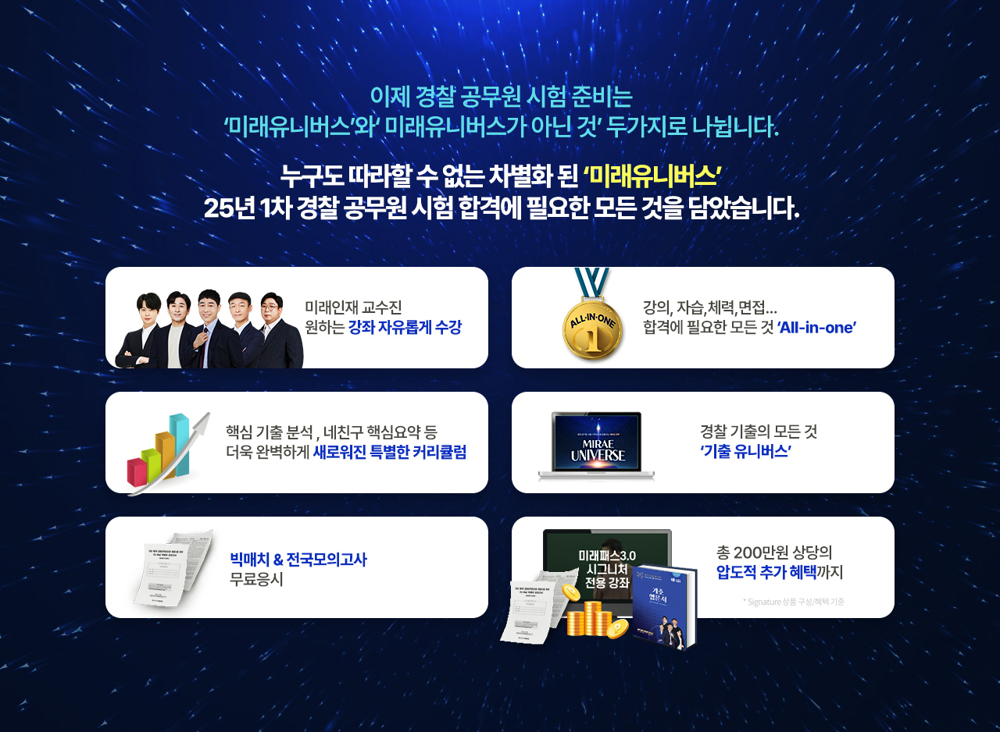

경찰공무원 확실한 선택은 미래인재경찰학원 입니다
경찰 단기합격은 미래유니버스
9월 개강반
[선접수 EVENT] 7/29까지 최저가 혜택
온라인 미래패스 선제공 + 선착순 20명 자기주도 학습관 지정좌석(7~8월)
※미래유니버스 12개월 상품에 한함- 315만원
- 182만원
- 315만원
- 161만원
- 315만원
- 161만원
- 540만원
- 294만원
최대 10만원 할인 > 2개월 기본이론
종합반 바로가기 >